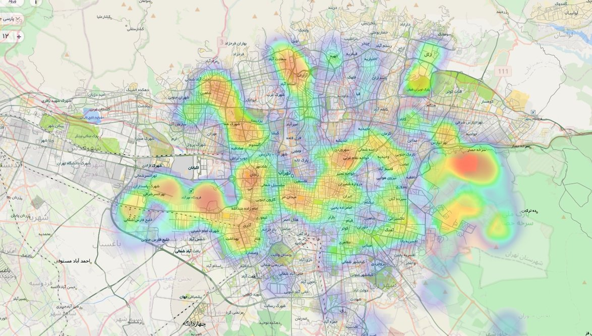

همونطور که میدونید تلگرام یه قسمتی داشت به اسم Find People Nearby که افرادی که اطراف شما بودن و این گزینه رو فعال کرده بودن نشون میداد. چیزی که کمتر کسی بهش فکر میکرد این بود که این «اطراف» یه نقطهی ثابت نیست — هر جا که باشی، لیستِ خودش رو میده.
من با API تلگرام به مدت ۱۲ ساعت دیتای کل تهران رو جمع کردم و نتیجه این هیتمپ شد.

نکتهی نگرانکنندهتر این بود که تلگرام فاصلهی تقریبی هر نفر رو هم میده. یعنی با تکنیکی مثل trilaterate — سه بار اندازهگیری از سه نقطهی مختلف — میشه مختصات تقریبی خودِ فرد رو پیدا کرد. من این کار رو نکردم، ولی شدنی بود.
پ.ن. مدتی بعد تلگرام کلاً این فیچر رو حذف کرد. نمیدونم ربطی داشت یا نه 😁
این کار را اول در کانال تلگرام و توییت گذاشتم؛ این نوشته همان است، کمی کاملتر.
nb.neighbours()
| title | date | |
|---|---|---|
| prev | آب رو نریزید اونجا که میسوزه! | ۱۴۰۳/۰۲ |
| next | بازیای که برندهاش هیچکس نیست | ۱۴۰۳/۰۳ |